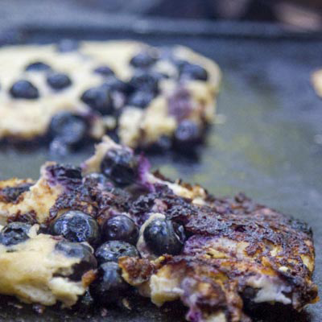

- Do The Bay
- SF Funcheap
- SFist
- SF Arts
- Makeshift Society
- Verlocal
- Workshop SF
- Public Glass
- Brit & Co
- SCRAP
- Techshop
- Noisebridge
- Thinkwalks
- Emperor Norton
- Found SF
- Wild SF Tours Parks + Free things http://www.lonelyplanet.com/usa/san-francisco/travel-tips-and-articles/76913 http://www.thebolditalic.com/articles/5032-a-guide-to-san-franciscos-lesser-known-parks http://sfrecpark.org/destination/seward-mini-park/ http://sfrecpark.org/destination/grand-view-park/ http://www.tripadvisor.com/ShowUserReviews-g60713-d127943-r143010128-De_Young_Museum-San_Francisco_California.html https://www.thrillist.com/entertainment/san-francisco/sf-secrets-you-didn-t-know-existed?ref=facebook-869 Food https://www.thrillist.com/eat/san-francisco/best-things-to-eat-in-sf-iconic-foods-bucket-list http://www.arizmendibakery.com/ https://www.facebook.com/Trouble-Coffee-and-Coconut-Club-56373211579/timeline/ http://devilsteethbakingcompany.com/ http://www.artscafesf.com/home.html http://sf.eater.com/maps/best-new-coffee-shops-san-francisco-oakland-berkeley Event Locations http://publicsf.com/ http://www.thechapelsf.com/ http://www.theindependentsf.com/ http://thefillmore.com/ http://www.pianofight.com/ Stores http://www.scrap-sf.org/ http://www.buildingresources.org/index.html http://raredevice.net/ http://www.glasskeyphoto.com/#glass-key-photo https://www.leicastoresf.com/gallery/ http://www.danzelen.com/about/d-zelen/ http://shoppainted.com/ http://www.communitythriftsf.org/ http://outofthecloset.org/ http://www.whistlesf.com/ http://www.urbanbazaarsf.com/ https://secure.dandelionsf.com/items/ http://flippsf.com/ Galleries http://sfarts.org/ http://sfartenthusiast.com/ http://www.111minnagallery.com/ http://warehouse416.com/past-events http://oaklandartmurmur.org/ https://www.artspan.org/home http://alterspace.co/information/ http://www.parklifestore.com/gallery/ http://www.wonderlandsf.com/ http://www.spoke-art.com/ http://www.waltdisney.org/ http://www.exploratorium.edu/
Websites for Happenings/Events
Workshops
Tours


